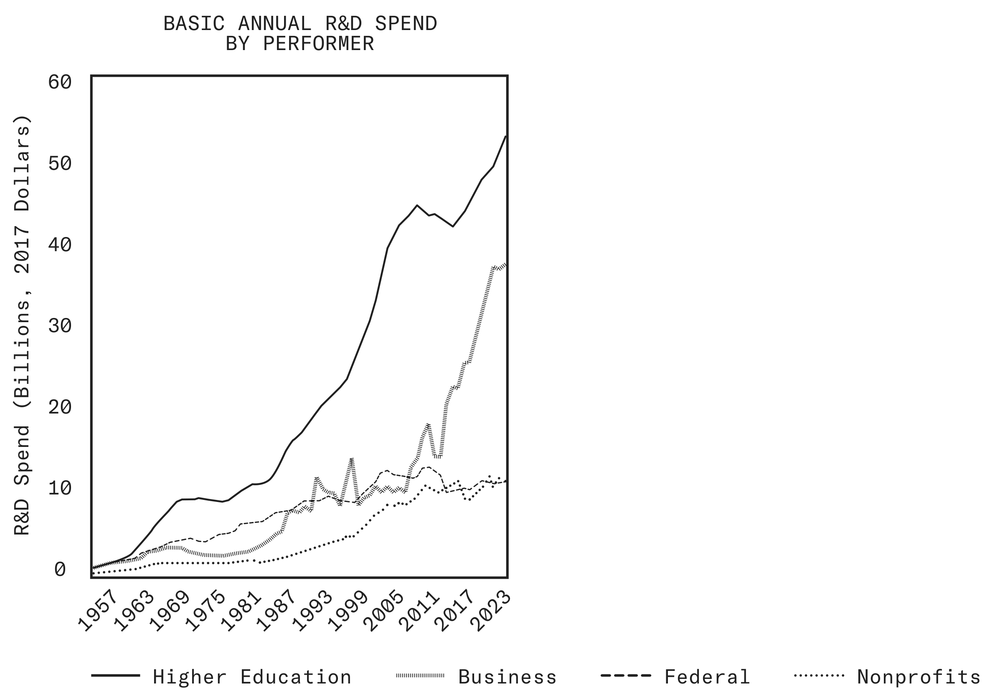
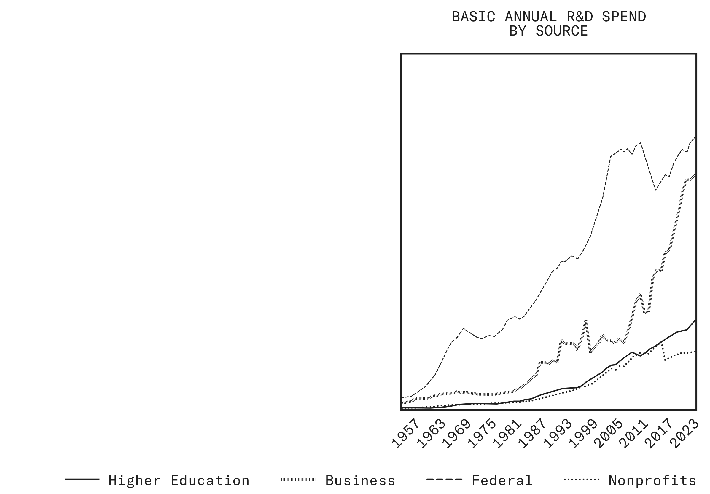
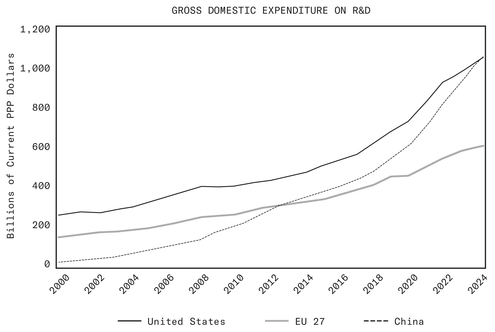
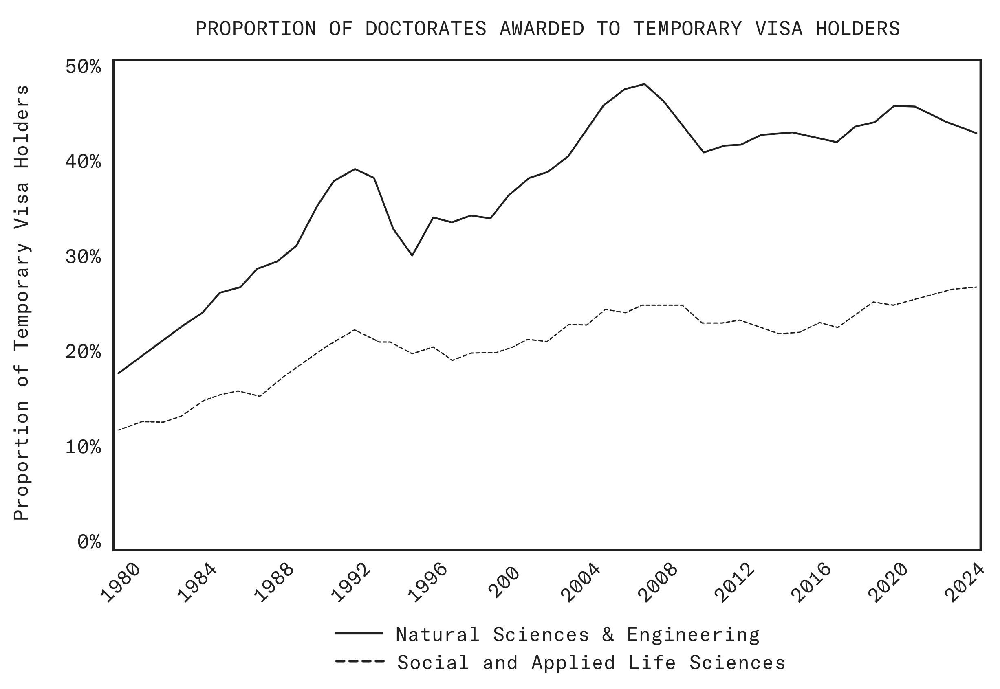

第一章 引言
Chapter I: Introduction
I.1 科学进步依然不可或缺
I.1 Scientific Progress Remains Essential
Eighty-one years ago, Vannevar Bush wrote that scientific progress would be an “essential key to our security as a nation, to our better health, to more jobs, to a higher standard of living, and to our cultural progress.”1 Bush had seen a glimpse of science’s promise for America in the triumphs of penicillin and radar in securing victory in World War II. His vision proved prescient through the eight decades that followed.
八十一年前，Vannevar Bush 写道，科学进步将是决定「我们作为一个国家的安全、我们更好的健康、更多的工作岗位、更高的生活水准，以及我们的文化进步」的关键。1 从青霉素和雷达帮助我们赢得第二次世界大战的胜利中，Bush 瞥见了科学对美国的许诺。此后八十年间，事实一再印证了他的远见。
Since then, incredible breakthroughs have emerged from our nation’s laboratories: the transistor and the integrated circuit, the laser and the LED, the mapping of the human genome and the tools to edit it. The “new products, new industries, and more jobs”2 Bush envisioned have materialized as entire economic sectors, such as computing, biotechnology, aerospace, and telecommunications, which today employ tens of millions and generate trillions in wealth. Enabled by technologies unimaginable in Bush’s time, the energy revolution has made America the world’s largest oil and gas producer.
此后，我们国家的实验室里不断涌现出惊人的突破：晶体管与集成电路，激光与发光二极管（LED），人类基因组图谱以及编辑基因的工具。Bush 所设想的「新产品、新产业和更多就业」2，已经具体化为计算、生物技术、航空航天、电信等完整的产业部门；这些部门今天雇用数千万人，创造数万亿美元的财富。在 Bush 时代无法想象的技术推动下，能源革命使美国成为世界最大的石油和天然气生产国。
Now small computers in our pockets connect us instantly to family across the continent, unlock the world’s knowledge, and guide us through unfamiliar streets. Great advances in materials science have given us everything from nylon stockings to bulletproof vests, artificial joints, and fighter jets. We placed GPS satellites in orbit that guide our tractors to precision planting, our packages to on-time arrival, and our troops through hostile terrain. We established the field of modern biotechnology, invented MRI, and developed the lithium batteries that power our cordless world. And in mere decades after Bush’s letter, we walked on the Moon and sent scientific instruments to the edge of the solar system.
如今，我们口袋里的微型计算机让我们即时联系上大陆另一端的家人，打开全世界的知识，并在陌生街道上为我们导航。材料科学的巨大进步，给我们带来了从尼龙丝袜到防弹背心、人工关节和战斗机的一切。我们把 GPS 卫星送入轨道，它们引导我们的拖拉机精量播种，让我们的包裹准时送达，带我们的士兵穿越险恶地形。我们开创了现代生物技术领域，发明了磁共振成像（MRI），研制出为这个无线世界供电的锂电池。而在 Bush 那封信之后的短短数十年间，我们登上了月球，把科学仪器送到了太阳系边缘。
Our scientists have achieved even more than this. We often forget that American farmers have tripled their output while using about a quarter of the labor used in the 1940s,3 or that the average American lives more than 10 years longer than when Bush penned his report.4 Within living memory, cancer has been transformed from a death sentence to a treatable condition for millions of Americans. The most common form of childhood leukemia has gone from universally fatal to curable in 90% of cases,5 and deaths from heart disease have fallen by more than half since their peak.6
I.2 作为我们一切成就的源头
I.2 As the Source of Our Triumphs
These triumphs happened, and happened here in America, only because of intentional choices made by our people and institutions.
这些成就之所以发生，而且发生在美国，完全是因为我们的人民和机构作出了深思熟虑的选择。
First, consistent with what Bush outlined in his essay, the government played a vital role in supporting the scientific enterprise to achieve national goals. These include conquering disease, creating jobs, and ensuring security. Against the backdrop of pre-War federal research funding, which was largely focused on agriculture, this proved to be a key insight.7 Not all valuable research attracts private capital, particularly research that promises only slow, diffuse returns. In the capital environment of the mid-20th century, no investor would have funded efforts to build particle accelerators or discover the fundamental insights that underlie the genomic revolution.
第一，与 Bush 在文中阐述的主张一致，政府在支持科学事业以实现国家目标方面发挥了至关重要的作用——这些目标包括战胜疾病、创造就业和保障安全。在战前联邦科研经费主要投向农业的背景下，这被证明是一项关键洞见。7 并非所有有价值的研究都能吸引私人资本，尤其是那些只带来缓慢而分散回报的研究。在 20 世纪中叶的资本市场环境中，没有任何投资者会出资建造粒子加速器，或去发现支撑基因组革命的那些基础性洞见。
As Bush argued, there are “areas of science in which the public interest is acute but which are likely to be cultivated inadequately if left without more support than will come from private sources.”8 Today, we benefit from that insight with an extensive set of federal organizations to advance scientific research, including NSF, DOE national laboratories, NIH, NASA, the National Institute of Standards & Technology (NIST), the Defense Advanced Research Projects Agency (DARPA), and other research arms of federal departments and agencies.
正如 Bush 所言，「有些科学领域的公共利益诉求十分迫切，但如果只能依靠私人来源的支持，它们很可能会得不到充分的培育。」8 今天，我们受益于这一洞见，拥有了一整套推进科学研究的联邦机构，包括 NSF、DOE 国家实验室、NIH、NASA、国家标准与技术研究院（NIST）、国防高级研究计划局（DARPA），以及联邦各部门和机构中的其他研究部门。
Second, our government recognized that achieving those national purposes requires more coordination than any single institution can provide, and that our unique advantage, whether in defeating the Soviet Union or winning the technological race today, lies in our dynamic private sector. Describing the development of penicillin, Bush spoke of how the government launched a “coordinated attack on special problems,” supporting research and development among medical schools, universities, and the pharmaceutical industry, and helping ideas progress from early laboratory experimentation to large-scale production and use.9 This model became the foundation of the fruitful public-private partnerships that sent Americans to the Moon and built the internet. This dynamism between publicly funded science and private enterprise remains the engine of American innovation.
第二，我国政府认识到，实现这些国家目标所需的协调，超出任何单一机构所能提供的范围；而我们的独特优势——无论是在击败苏联时，还是在赢得今天的技术竞赛时——都在于充满活力的私营部门。在描述青霉素的研发过程时，Bush 讲到政府如何发起「针对特殊问题的协同攻关」，支持医学院、大学和制药业的研究与开发，帮助想法从早期实验室试验走向大规模生产和使用。9 这一模式后来成为卓有成效的公私伙伴关系的基础，正是这种伙伴关系把美国人送上了月球，也建成了互联网。公共资助的科学与私营企业之间的这种互动，至今仍是美国创新的引擎。
Third, we stayed true to the call for science to remain dynamic. “The pioneer spirit is still vigorous within this nation,” Bush wrote.10 “Science offers a largely unexplored hinterland for the pioneer who has the tools for his task.”11 Each of our past triumphs required substantial courage and institutional transformation. They compelled us to invent new models to drive scientific progress: dedicated science funding agencies, innovative partnerships that enabled the widespread commercialization of modern electronics, and reforms like the deregulation of space that opened the door to today’s vibrant era of commercial spaceflight.
This willingness to venture into unknown territory, to challenge established methods, and to create new institutions when old ones prove inadequate, built the scientific supremacy that undergirds our vibrant economy and national security today.
正是这种敢于进入未知领域、敢于挑战既定方法、并在旧机构力不从心时创建新机构的意愿，造就了今天支撑我们繁荣经济与国家安全的科学优势。
I.3 格局正在变化
I.3 The Landscape Is Changing
The principles that government must support basic research, that this research drives national prosperity, and that America’s advantage lies in the dynamism of our institutions, remain as sound today as when Bush first articulated them. But principles are not processes. Bush would be the first to recognize that the landscape in which fundamental research is conducted has completely transformed since he wrote Science: The Endless Frontier.
政府必须支持基础研究，基础研究驱动国家繁荣，美国的优势在于其机构的活力——这些原则在今天依然像 Bush 最初阐发时一样成立。但原则不等于流程。Bush 本人会最先承认：自他写下《科学：无尽的前沿》（Science: The Endless Frontier）以来，开展基础研究的整体格局已经彻底改变。
In 1950, a dozen engineers in basic laboratories drove progress in semiconductors. Today, the semiconductor industry invests more than $100 billion in capital and R&D each year and employs hundreds of thousands.12 They regularly solve physics and materials problems at the edge of possibility and build fabrication plants filled with robots that manipulate silicon atom by atom.
1950 年，十几名工程师在简陋的实验室里推动着半导体技术的进步。今天，半导体产业每年在资本支出和研发上投入超过 1,000 亿美元，雇用数十万人。12 他们经常解决处于可能性边缘的物理与材料问题，并建造布满机器人的晶圆厂，让机器人逐原子地操作硅。
In 1950, scientists mailed typewritten manuscripts to journal editors, who sent copies to reviewers from their personal networks at top universities. Today, researchers post papers online within hours of completion. Thousands read and debate the merits of the work immediately on social media and in discussion channels. Code gets replicated on the internet months before the paper appears in print.
1950 年，科学家把打字机打出的稿件寄给期刊编辑，编辑再把副本寄给自己在顶尖大学人脉网络中的审稿人。今天，研究者在论文完成几小时内就把它发布到网上，成千上万的人立刻在社交媒体和讨论频道中阅读并争论其价值。代码在论文印成铅字之前几个月，就已经在互联网上被人复现。
In 1950, mathematicians worked alone with chalkboards and stacks of papers from the library. Today, they look up theorems instantly online. Computers enable experimental mathematics that would have been impossible with pencil and paper. Software languages modularize massive proofs, letting dozens of mathematicians collaborate on a single problem simultaneously from coast to coast.
1950 年，数学家独自面对黑板，以及从图书馆借来的一摞摞论文。今天，他们在网上瞬间就能查到定理。计算机使「实验数学」成为可能，而这在纸笔时代是无法做到的。软件语言把庞大的证明模块化，让数十位数学家可以同时从东海岸到西海岸协作研究同一个问题。
I.4 新前沿与新路径
I.4 New Frontiers and New Approaches
The institutions we build determine what problems get solved, which approaches get tried, what risks get taken, and whose talent contributes to discovery. When these institutions align with the nature of the scientific frontier and with our national needs, science advances; when they are misaligned, abundant resources and brilliant researchers go to waste. The misalignment shows up as diminishing returns to R&D investments, a decline in the pursuit of breakthrough ideas, and a slowdown in the benefits that technological progress delivers to the American people.
我们建立的制度决定了哪些问题会被解决、哪些路径会被尝试、哪些风险会被承担，以及谁的才能会投入到发现之中。当这些制度与科学前沿的性质、与我们的国家需求相契合时，科学就前进；当二者错配时，充裕的资源和杰出的研究者就被浪费。错配表现为：研发投入的回报递减，对突破性想法的追求减少，以及技术进步带给美国人民的收益放缓。
Institutional design matters because individual researchers follow the signals their institutions send. Consider the incentives of a talented researcher working at the frontier of quantum information science.
制度设计之所以重要，是因为每一位研究者都会追随制度发出的信号。不妨看看一位在量子信息科学前沿工作的优秀研究者面对什么样的激励。
As a Ph.D. student in a university lab, this researcher must publish regularly to graduate, craft narratives that satisfy journal reviewers and his dissertation committee, and build the personal connections that lead to academic jobs. His professor’s grant funding limits what equipment he can afford. He designs experiments around the apparatus in his lab more than the questions most worth asking. With two years until graduation, he actively looks for results that advance his dissertation’s narrative. When unexpected results appear, he sometimes chooses to pursue them, but remains cognizant of potential risks to his professional progress and his lab’s future funding.
作为大学实验室里的博士生，这位研究者必须定期发表论文才能毕业，必须编织出让期刊审稿人和博士论文委员会满意的叙事，还必须建立能带来学术职位的人脉。他能负担什么设备，取决于导师的经费。他设计实验时，更多是围绕实验室里已有的装置，而不是最值得追问的问题。距离毕业还有两年，他会主动寻找能推进其博士论文叙事的结果。当出现意外结果时，他有时会选择追下去，但同时始终清楚这对自己的职业进展和实验室未来经费可能意味着风险。
As a startup founder raising venture capital, the same researcher faces different pressures. He pitches a bold vision of scalable quantum computing to investors. He can hire engineers and build quickly with tens of millions of dollars in seed funding. But he must also deliver revenue within five years and sustain a clear narrative as funding rounds continue. The technical approach he outlined to investors may not be the best path forward, but changing course risks losing investor confidence. Market pressure imposes scientific constraints that grant reviewers might not.
当同一位研究者成为正在融资的创业公司创始人时，他面对的压力截然不同。他向投资人讲述可规模化量子计算的大胆愿景。凭借数千万美元的种子资金，他可以迅速招聘工程师、快速搭建。但他也必须在五年内产生收入，并且在后续融资轮次中维持清晰的叙事。他向投资人阐述的技术路线未必是最佳路径，但改变方向可能失去投资人的信任。市场压力会施加一些资助评审人未必会施加的科学约束。
Both paths advance science and technology, but both channel talent toward different problems in different ways. The discoveries that get made depend not only on the questions that are scientifically salient, but on the fit between those questions and the incentives researchers must navigate. It therefore falls to the public officials who steward federal funding, as the architects of the national scientific enterprise, to understand the constraints our researchers face, to create the right incentive structures wherever possible, and to drive R&D in whatever gaps remain. Only then can we unleash American scientists and give them ever greater freedom to explore.
两条路径都在推进科学技术，但它们以不同方式把人才引向不同的问题。最终会取得哪些发现，不仅取决于哪些问题在科学上重要，也取决于这些问题与研究者必须应对的激励之间是否契合。因此，作为国家科学事业的设计者，掌管联邦经费的公共官员有责任理解我们的研究者所面临的约束，尽可能建立正确的激励结构，并在尚存的空白领域推动研发。只有这样，我们才能释放美国科学家的能量，给他们越来越大的探索自由。
Universities remain essential for training scientists and pursuing fundamental questions. Venture capital mobilizes private resources toward high-impact technologies. Federal agencies fund research that markets alone will not support. Each serves an essential purpose, but the scientific frontier is constantly shifting, requiring vigilant self-improvement to ensure these institutions remain suited to the answering the most important questions today.
大学在培养科学家和追寻根本问题方面依然不可或缺；风险投资把私人资源调动到高影响力技术上；联邦机构为市场本身不会支持的研究提供资金。三者各有不可替代的作用，但科学前沿在不断移动，这要求我们保持警醒、持续自我改进，确保这些机构仍然适合回答今天最重要的问题。
The system that emerged from Bush’s vision served the last American Century. But every generation of Americans must show the courage to reinvent our institutions when the frontier demands it. We established land-grant universities when agriculture needed scientific foundations. We created DARPA when the pursuit of breakthrough military technologies required an agency willing to fund high-risk ideas that traditional funders would reject. We developed the venture capital model when a gap emerged between the long time horizons of emerging technology companies and the capacity of traditional capital markets.
从 Bush 的愿景中生长出来的这套体系，支撑了上一个美国世纪。但当前沿提出这样的要求时，每一代美国人都必须拿出重塑自身制度的勇气。当农业需要科学基础时，我们建立了赠地大学。当追求突破性军事技术需要一个愿意资助高风险想法、而传统资助者会拒绝这些想法的机构时，我们创建了 DARPA。当新兴技术公司的长周期与传统资本市场的承受能力之间出现缺口时，我们发展出了风险投资模式。
The questions demanding answers, the tools required to answer them, the scale of coordination needed, and the timelines involved all shift as knowledge advances. As our predecessors did, we must continue to craft and refine the machinery of science, allowing each component to work to its full advantage and freeing our innovators from pressures that keep them from the greatest goals. A new American Century will require new engines of scientific discovery.
随着知识进步，亟待回答的问题、回答问题所需的工具、所需的协调规模以及所涉及的时间尺度都在变化。与前辈一样，我们必须不断打造和完善科学这部机器，让每个部件都充分发挥作用，并把创新者从那些使他们无法追求最宏大目标的压力中解放出来。一个新的美国世纪，需要新的科学发现引擎。
I.5 私营部门研发持续增长
I.5 Growing Private Sector R&D
One particularly visible shift in the scientific machine is who funds and performs research. When Bush penned his report in the middle of the 20th century, the Federal Government stood as the dominant patron of American science, marshaling the nation’s research capacity for victory in war. The landscape today would astonish him. Private industry has become by far the largest source of R&D funding in the United States, with its share roughly doubling from the 1950s to today, even as federal funding has grown by leaps and bounds. American companies now deploy around $700 billion annually, more than triple the spending of government and higher education.13 While this investment has historically been dominated by late-stage product development, strikingly, the share devoted to basic research, which Bush thought markets could not sustain alone, has also grown rapidly, particularly over the past two decades (Figure 1).
科学这部机器上一个尤其明显的变化，是谁来出资、谁来研究。20 世纪中叶 Bush 撰写报告时，联邦政府是美国科学的主导赞助者，为赢得战争而调动全国的研究能力。今天的格局会让他大为惊讶。私营产业已成为美国研发资金遥遥领先的最大来源，其份额从 20 世纪 50 年代到今天大约翻了一倍，而与此同时联邦经费也在大幅增长。美国企业现在每年投入约 7,000 亿美元，是政府与高等教育投入总和的三倍多。13 这类投入历史上主要集中于后期产品开发；但引人注目的是，投向基础研究的份额也在快速增长——而这恰恰是 Bush 认为市场无法独自支撑的部分——尤其是在过去二十年（图 1）。
Consider two transformative inventions of recent memory, the transistor and the transformer architecture that underpins modern machine learning. Both came from corporate laboratories that employ thousands of researchers who often produce collaborative, well-cited papers on problems of deep intellectual interest. Modern industrial powerhouses fund state-of-the-art experiments and pay salaries tens or hundreds of times more than the academy, drawing top talent from across the country. Researchers at American companies have earned Nobel Prizes for work on electron tunneling in semiconductors, surface chemistry, polymer science, and lasers, a testament to both the rigor of their research and the fundamental nature of their work.
不妨看看近来两项具有变革意义的发明：晶体管，以及支撑现代机器学习的 Transformer 架构。二者都出自企业实验室；这些实验室雇用成千上万名研究者，他们常常围绕具有深层智识价值的问题，产出协作性的、被广泛引用的论文。现代工业巨头资助最前沿的实验，并支付比学术界高出数十倍甚至上百倍的薪酬，从而吸引全国顶尖人才。美国企业的研究者凭借在半导体电子隧穿、表面化学、高分子科学和激光方面的研究获得诺贝尔奖——这既证明了他们研究的严谨，也证明了其工作的基础性。
Figure 1: Private sector basic R&D has grown rapidly over the past two decades. It now rivals higher education among performers (left) and the Federal Government among funders (right) of basic research in the United States.14
图 1：过去二十年，私营部门的基础研发快速增长。在美国基础研究的执行主体中（左图），它已可与高等教育比肩；在出资方中（右图），它已可与联邦政府比肩。14


This is not a sign that the academy has become less important, but rather that the scientific world has expanded. In certain domains, the scale of private investment dwarfs anything federal agencies can match. Universities face real limits in scaling up engineering efforts, with rare exceptions for government-sponsored big science projects like space probes and particle accelerators; yet Ph.D. students and professors can now raise hundreds of millions of dollars to found companies that pursue fundamental breakthroughs. Small startups increasingly perform basic research themselves, giving our most talented scientists new paths for ambitious work. These firms blur the distinction between basic and applied science, combining research and development to accelerate both.
这并不意味着学术界变得不重要，而是说明科学世界本身扩大了。在某些领域，私人投资的规模令联邦机构难以企及。大学在扩大工程规模方面确有实际限制——只有太空探测器、粒子加速器这类政府支持的大科学项目是少见的例外；但如今博士生和教授能够募集数亿美元创办公司，去追求基础性的突破。小型创业公司越来越多地自行开展基础研究，为我们最有才能的科学家提供了从事雄心勃勃工作的新路径。这些公司模糊了基础科学与应用科学的界限，把研究与开发结合起来，使两者同时加速。
I.6 线性模型不再成立
I.6 The Linear Model No Longer Holds
In his 1945 report, Vannevar Bush presented a progression from basic research through applied research to development, later termed the “linear model.”15 This framework laid out a clear role for each part of the research and development pipeline. Universities would pursue fundamental understanding without the pressure of practical application. Industry would turn discoveries into products. At the time, the separation was natural and productive.
在 1945 年的报告中，Vannevar Bush 提出了一条从基础研究到应用研究再到开发的递进路径，后来被称为「线性模型」。15 这一框架为研发链条上的每个环节都规定了清晰的角色：大学在不受实际应用压力的情况下追求根本性的理解，产业界把发现转化为产品。在当时，这种分工自然且富有成效。
Modern discovery, however, is increasingly shaped by continuous iteration between fundamental and applied work. Engineering challenges routinely expose unanswered scientific questions, and breakthroughs in basic understanding, in turn, open new engineering pathways. The relationship is recursive rather than unidirectional. The tools required to push the frontier, whether advanced fabrication equipment or specialized engineering teams, are often found outside traditional academic settings. Many of our most productive researchers now move fluidly between sectors, carrying ideas and techniques with them. Technology and science have become deeply interdependent, even, as we will discuss in Chapter V, in the purest fields of reason like mathematics.
然而，现代的科学发现越来越由基础工作与应用工作之间的持续迭代所塑造。工程难题常常暴露出尚未回答的科学问题；反过来，基础理解上的突破又打开新的工程路径。这种关系是递归的，而不是单向的。推进前沿所需的工具——无论是先进制造设备，还是专门的工程团队——往往存在于传统学术环境之外。我们今天许多最高产的研究者在不同部门之间自由流动，带着想法和技术一起走。技术与科学已经深度相互依存，甚至如我们将在第五章讨论的，在数学这样最纯粹的理性领域也是如此。
This non-linearity is also captured by the framework Donald Stokes articulated half a century after Bush. “Pasteur’s quadrant,” as he termed it, now defines a growing share of the scientific frontier.16 Stokes argued that research can seek fundamental understanding while being motivated by considerations of use, observing that some of the most consequential scientific advances all arose precisely from this combination. Examples of such research include Pasteur’s investigations into why wine spoiled, the development of the transistor at Bell Labs, and Shannon’s work on information theory. Many of the transformative discoveries of our own era, from the computational study of protein folding that earned the 2024 Nobel Prize in Chemistry to the superconducting quantum devices that earned the 2025 Nobel Prize in Physics, emerged from efforts that were at once theoretically ambitious and deeply connected to practical problems.
这种非线性，也被 Donald Stokes 在 Bush 之后半个世纪提出的框架所刻画。他称之为「Pasteur 象限」（通译「巴斯德象限」）的这类研究，如今界定了科学前沿中越来越大的份额。16 Stokes 认为，研究可以在追求根本理解的同时受到使用考量的驱动；他观察到，一些最具影响力的科学进展恰恰都来自这种结合。这类研究的例子包括 Pasteur 对葡萄酒为何变质的探究、Bell Labs 对晶体管的开发，以及 Shannon 在信息论方面的工作。我们时代许多具有变革意义的发现——从获得 2024 年诺贝尔化学奖的蛋白质折叠计算研究，到获得 2025 年诺贝尔物理学奖的超导量子器件——都产生于既在理论上雄心勃勃、又与实践问题深度相连的努力。
Our national laboratories and federally funded research centers have long been engines for this use-inspired research, and new centers of modern science reflect the same pattern. A greater share of scientists are leaving academia for industry, not because they have abandoned curiosity-driven inquiry, but because the tools, resources, and career opportunities required to pursue certain fundamental questions increasingly lie outside university walls. The task ahead is to enable scientists to move fluidly between problems of different shapes and to give them the freedom and resources to pursue discovery at today’s frontier.
我们的国家实验室和联邦资助的研究中心长期以来就是这类「受使用意图启发的研究」的引擎，而现代科学的新型中心也呈现出同样的模式。越来越多的科学家离开学术界进入产业界，并不是因为他们放弃了由好奇心驱动的探究，而是因为探究某些根本问题所需的工具、资源和职业机会，越来越多地存在于大学围墙之外。前方的任务是让科学家能够在形态各异的问题之间自由穿行，并给他们自由和资源，去在当今的前沿上从事发现。
$886B U.S. R&D investment, 2024
2024 年美国研发投入 8,860 亿美元
I.7 我们的研究者面临日益严峻的挑战
I.7 Our Researchers Face Mounting Challenges
These rapid changes demand that our institutions adapt. As will be addressed in Chapter II, significant portions of our federal funding apparatus remain anchored to outdated assumptions. This is not an indictment of the talented scientists and grantmakers who staff these bureaucracies, but a product of institutional inertia, born from the lack of market selection pressure that drives constant experimentation.
这些迅速的变化要求我们的制度作出调整。正如第二章将要讨论的，联邦资助体系中相当一部分仍然锚定在过时的假设上。这并非对在这些官僚机构中工作的优秀科学家和资助管理者的指责，而是制度惯性的产物——它源于缺少那种驱动持续试验的市场选择压力。
NSF, for instance, still organizes itself primarily around academic disciplines, much as it did in the 1950s, and channels resources overwhelmingly to a single type of performer, the university-based, principal investigator-led research group. Many federal programs are still built around the linear model, making the assumption that basic research happens in academia while development happens in industry. Academic incentives often penalize rather than reward partnerships that cross institutional boundaries. Agencies face little external pressure to adapt, even as the scientific landscape transforms around them, preserving processes essentially unchanged for decades.
例如，NSF 至今仍主要按学科来组织自身，与 20 世纪 50 年代几乎无异，并把资源压倒性地投向单一类型的执行主体：以大学为依托、由首席研究员（PI）领导的研究组。许多联邦项目仍然建立在线性模型之上，假定基础研究发生在学术界、开发发生在产业界。学术界的激励机制往往惩罚而不是奖励跨越机构边界的合作。即便科学格局在其周围发生转变，各机构也几乎感受不到适应的外部压力，许多流程几十年来基本未变。
Within academia itself, well-documented inefficiencies compound these structural problems. Administrative burdens on researchers have grown over time; one study found that investigators spend nearly half of their federally funded research time on paperwork rather than on research or teaching.17 Universities also extract significant overhead from researchers, which funds a mix of legitimate shared infrastructure and growing administrative bloat. Effective indirect cost rates at NIH-funded institutions average more than 40%,18 even though those same institutions frequently accept 10 to 15% overhead from private funders.19
The assumptions embedded in our federal grantmaking institutions, and the creeping inefficiencies within the universities they predominantly serve, reinforce one another. While researchers themselves recognize the need for renewal, few Administrations have had the will and mandate to pursue transformative change.
联邦资助机构中固有的假设，与它们主要服务的大学内部缓慢蔓延的低效，彼此相互强化。尽管研究者自己都认识到需要更新，但很少有哪一届政府拥有推动变革性改革的意愿和授权。
I.8 科研需求紧迫之时
I.8 At a Time of Urgent Scientific Need
On the global stage, America no longer stands alone as the unchallenged leader in science and technology. The United States risks losing its first position to competitors that are quicker to update their models of research funding, maintain greater institutional flexibility, and can build tighter connections between different sectors of their scientific enterprise.
在全球舞台上，美国已不再是无人挑战的科技领导者。美国有可能失去第一的位置，被那些更迅速地更新科研资助模式、保持更大制度灵活性、并能在其科学事业各部门之间建立更紧密联系的竞争者超越。
Over the past twenty years, China’s R&D spending has surged from a negligible fraction of U.S. levels to full parity on a purchasing-power-adjusted basis by some metrics (Figure 2). This is a situation America did not face even during the Cold War, when the Soviet Union’s economy was appreciably smaller than our own.20 Beyond the sheer scale of its spending, Beijing is treating scientific research capacity as a central pillar of global competition, elevating decision-making to the highest level and taking a tightly integrated approach to partnerships across its sectors. This all-of-society approach has allowed China to surge resources toward basic scientific research, advance rapidly in technologies of key national interest, and drive improvements in its innovation process, where entrenched interests have resisted change.
过去二十年，中国的研发支出从相对美国微不足道的比例，跃升到按购买力调整后在某些指标上与美国完全相当的水平（图 2）。即使是在冷战时期，美国也未曾面对这样的局面——当时苏联的经济规模明显小于美国。20 除了支出的绝对规模，北京还把科研能力视为全球竞争的核心支柱，把决策层级提升到最高，并以高度一体化的方式推进各部门之间的协作。这种「全社会」路径使中国能够把资源迅速集中到基础科学研究上，在关乎国家核心利益的技术上快速前进，并推动其创新流程的改进——在这一流程中，既得利益一直抵制改变。
Figure 2: For the first time, the United States faces a peer-level competitor in R&D spending on a purchasing power parity (PPP)-adjusted basis.21
图 2：按购买力平价（PPP）调整后，美国首次在研发支出上面临一个同级别的竞争者。21

China is not the only country reforming its scientific enterprise. The United Kingdom, for example, has restructured its funding system to address internal inefficiencies, including creating a metascience unit to collect data and develop novel funding mechanisms. Norway has organized its national research council around a portfolio-based model, with boards that allocate funding across thematic priorities drawn from the government’s long-term research plan, alongside disciplinary portfolios. With new ideas bubbling up across the world and within our own vibrant philanthropic, metascience, and academic communities, it falls on the United States as the world’s premier scientific power to take a hard look at how we can accelerate our own scientific machine as well.
中国并非唯一在改革其科学事业的国家。例如，英国重组了资助体系以解决内部低效问题，包括设立一个元科学部门来收集数据、开发新的资助机制。挪威则围绕组合管理模式组织其国家研究理事会，由各委员会依据政府长期研究计划所确定的主题优先方向以及各学科组合来分配经费。当新想法在全世界以及在我们自己活跃的慈善界、元科学界和学术界不断涌现时，作为世界头号科学强国，美国也有责任认真审视：我们怎样才能让自己的科学机器也加速运转。
I.9 重夺领导地位
I.9 Regaining Leadership
Beyond strengthening science, we also have a duty to ensure that its downstream benefits accrue to the American people first.
除了加强科学本身，我们还有责任确保科学的下游收益首先归于美国人民。
For decades, the United States has funded large cohorts of foreign students and tolerated technology transfer abroad under lax security standards. As of 2024, temporary visa holders accounted for around half of U.S. doctoral graduates in computer science and mathematics with confirmed postgraduation plans.22 This reliance on foreign talent sidelines American students, a deep domestic talent pool that remains under-supported by its own government. At the same time, we train extraordinary global talent at enormous expense, only to lose this effort when foreign governments recruit them to build up their own technological enterprises. The interest of vast scores of Americans in using taxpayer dollars to invest in our STEM pipeline has, consequently, eroded.
几十年来，美国资助了大批外国学生，并在宽松的安全标准下容忍技术向海外转移。截至 2024 年，在已确认毕业后去向的美国计算机科学与数学博士毕业生中，持临时签证者约占一半。22 对外国人才的这种依赖使美国学生被边缘化——这是一支底蕴深厚、却始终未得到本国政府足够支持的国内人才队伍。与此同时，我们耗费巨资培养非凡的全球人才，却在外国政府招募他们去建设本国科技事业时失去了这份投入。其结果是，广大美国人对于用纳税人的钱投入我国 STEM 人才通道的兴趣已被侵蚀。
America’s over-reliance on foreign students also creates a security challenge our institutions are ill-equipped to address. While our R&D ecosystem is now less vulnerable to exploitation due to Presidential actions taken in the first Trump Administration, there is an urgent need for a comprehensive approach to research security.23 Our competitors have learned to exploit a deep asymmetry between open and closed scientific systems, using our education system as an entry point into our innovation base while building domestic programs that undermine global scientific norms.
美国对外国学生的过度依赖，还带来了一项我们的制度无力应对的安全挑战。尽管由于第一届 Trump 政府采取的总统行动，我们的研发生态如今较不易被利用，但仍然迫切需要一套全面的科研安全方案。23 我们的竞争者已学会利用开放科学体系与封闭科学体系之间的深刻不对称：把我们的教育体系当作进入我们创新基础的入口，同时在本国建设那些破坏全球科学规范的项目。
The United States conducts research openly, publishes freely, and shares methods transparently. These values are central to scientific progress. However, there is a critical difference between sharing information on one’s own terms and being exploited; the parts of a scientific enterprise that are not shared are often its comparative advantages. These are precisely what our competitors work hardest to extract, leveraging human capital educated in our universities, harvesting data from our papers while restricting access to their own, and scaling breakthroughs first achieved in our laboratories on their factory floors.
美国公开开展研究、自由发表成果、透明共享方法。这些价值对科学进步至关重要。然而，「按自己的条件共享信息」与「被利用」之间有着关键区别；一项科学事业中不予共享的部分，往往正是它的比较优势所在。而这恰恰是我们的竞争者最着力获取的东西：利用在我们大学里培养出的人力资本，从我们的论文中获取数据却限制别人接触他们自己的数据，并把最早在我们实验室里取得的突破放到他们自己的工厂里规模化生产。
For too long, the United States has believed that technological leadership can be secured solely by the discoveries made in America, regardless of whether those discoveries are then translated into products, capabilities, and industries here or on foreign soil. The consequences of this unguarded openness, in laboratories and in markets, have been severe. The United States pioneered many key enabling technologies for Extreme Ultraviolet (EUV) lithography,24 yet the only company capable of manufacturing EUV lithography machines today is headquartered in Europe. We pioneered lithium-ion batteries, yet Asian firms dominate global supply chains, and by extension, battery chemistry research. We developed advanced manufacturing techniques that now underpin factories abroad. Discovery without domestic manufacturing leaves America paying the research bill while rivals develop the process improvements and capture the economic, strategic, and knowledge returns.
长期以来，美国一直以为，只要发现诞生在美国，技术领先地位就能得到保障，而不论这些发现随后是在本国还是在外国转化为产品、能力和产业。这种在实验室与市场上的不设防开放，后果十分严重。美国开创了极紫外（EUV）光刻的许多关键使能技术，24 但今天唯一有能力制造 EUV 光刻机的公司总部却在欧洲。我们开创了锂离子电池，但亚洲企业主导着全球供应链，进而主导着电池化学研究。我们开发出先进制造技术，如今却支撑着海外工厂。发现若不伴随本土制造，结果就是美国支付研究账单，而竞争对手完成工艺改进，并拿走经济、战略和知识上的回报。
Figure 3: The share of U.S. doctorates awarded to temporary visa holders with definite postgraduation commitments has doubled over four decades, rising from roughly 20% to 40% in natural sciences and engineering, and from 10% to 20% in social, behavioral, and health sciences.25
图 3：在四十年间，授予持临时签证者、且其毕业后去向已确定的美国博士学位所占比例翻了一倍：自然科学与工程领域从约 20% 升至 40%，社会、行为与健康科学领域从 10% 升至 20%。25

I.10 总统的嘱托
I.10 The President's Charge
As our competitors copy and adapt our scientific machine for themselves, sustained leadership requires us to keep innovating. Standing still while the world changes is not stability. The Manhattan Project succeeded not only because of brilliant physicists, but because we built new institutions capable of coordinating the activity of thousands across the basic science and immense engineering challenges needed to build the bomb. The Apollo Program reached the Moon because NASA could marshal resources and talent in ways no university or company could match. Each represented not merely new funding, but fundamentally new ways of organizing scientific work.
当竞争者复制并改造我们的科学机器时，要维持领先就必须不断创新。在世界变化时原地不动，并不是稳定。曼哈顿计划之所以成功，不仅因为有杰出的物理学家，更因为我们建立了新的机构，能够在制造原子弹所需的基础科学与庞大工程挑战之间协调数千人的活动。阿波罗计划之所以能登上月球，是因为 NASA 能以任何大学或公司都无法比拟的方式调动资源和人才。二者都不仅意味着新的经费，更意味着组织科学工作的全新方式。
We must face the reality that more innovation is happening in industry than ever before, and that the balance and nature of work shared across the federal, university, and corporate pillars of the national research enterprise have shifted. We must acknowledge, too, that the linear model of discovery and technical progress no longer holds. The interplay between basic research, regular professional science, and commercialization is far more complex than had been assumed. Meanwhile, the context in which the American innovation enterprise operates has become global, and therefore intensely vulnerable; the technologies we invent rely on production chains that stretch around the world, and they are subject to theft by near-peer competitors. Finally, the technological context in which science is conducted and shared has been radically transformed by the internet and current information technologies, now changing even more with the rise of AI.
我们必须面对现实：产业界正在发生比以往任何时候都多的创新；国家研究事业中联邦、大学与企业这三大支柱之间分担工作的比重与性质已经改变。我们还必须承认，发现与技术进步的线性模型不再成立。基础研究、常规的职业科学工作与商业化之间的相互作用，远比人们过去假定的复杂。与此同时，美国创新事业所处的环境已经全球化，因而也极度脆弱：我们发明的技术依赖横跨世界的生产链，并且会被同级别竞争对手窃取。最后，科学开展与传播的技术环境已被互联网和当前的信息技术彻底改变，而随着 AI 的兴起，这种改变还在加速。
Throughout our history, Americans have reinvented, reformed, and refounded our institutions when the moment demanded it. Each generation of American scientists, inventors, and pioneers has seized the opportunity to expand the frontiers of knowledge. On the occasion of America’s 250th anniversary, we must remember that ours is a Republic defined by courage, innovation, and exploration.
纵观我们的历史，美国人在时代提出要求时，一次次重塑、改革和重建我们的制度。每一代美国科学家、发明家和先驱者都抓住机会扩展知识的疆界。在美国建国 250 周年之际，我们必须记住：我们的共和国以勇气、创新和探索为标志。
Just as scientific inquiry demands that we revise our theories when evidence contradicts them, evidence of scientific slowdown and serious competition from abroad should spur us to experiment with new systems, new models, and new ways of funding, conducting, and translating research. Vannevar Bush’s pioneering spirit calls us to do what he would surely do today: reimagine the entire enterprise for our time.
正如科学探究要求我们在证据与理论相悖时修正理论，科学放缓的证据和来自国外的严峻竞争，也应当促使我们去试验新的体系、新的模式，以及资助、开展和转化研究的新方式。Vannevar Bush 的开拓精神召唤我们去做他今天必定会做的事：为我们的时代重新构想整个科学事业。
本章脚注 · Notes（沿用官方印刷版编号）
- Vannevar Bush, Science, the Endless Frontier, 75th anniversary ed. (National Science Foundation, 2020), xiv. ↩
- Bush, Science, the Endless Frontier, 1. ↩
- U.S. Department of Agriculture, “A Look at Agricultural Productivity Growth in the United States, 1948-2017,” USDA Blog, March 5, 2020, https://www.usda.gov/about-usda/news/blog/look-agricultural-productivity-growth-united-states-1948-2017. ↩
- Elizabeth Arias et al., “United States Life Tables, 2023,” National Vital Statistics Reports 74, no. 6 (National Center for Health Statistics, July 15, 2025), https://www.cdc.gov/nchs/data/nvsr/nvsr74/nvsr74-06.pdf. ↩
- Ching-Hon Pui and William E. Evans, “A 50-Year Journey to Cure Childhood Acute Lymphoblastic Leukemia,” Seminars in Hematology 50, no. 3 (2013): 185–196, https://pmc.ncbi.nlm.nih.gov/articles/PMC3771494. ↩
- Earl S. Ford et al., “Explaining the Decrease in U.S. Deaths from Coronary Disease, 1980–2000,” New England Journal of Medicine 356, no. 23 (2007): 2388–2398, https://www.nejm.org/doi/full/10.1056/NEJMsa053935. ↩
- Keith Fuglie et al., Agricultural Research and Development: Public and Private Investments Under Alternative Markets and Institutions, AER-735 (U.S. Department of Agriculture, Economic Research Service, May 1996), https://www.ers.usda.gov/publications/pub-details?pubid=40696. ↩
- Bush, Science, the Endless Frontier, 9. ↩
- Bush, Science, the Endless Frontier, 13. ↩
- Bush, Science, the Endless Frontier, xiii. ↩
- Bush, Science, the Endless Frontier, xiii. ↩
- Semiconductor Industry Association, 2025 SIA Factbook, https://www.semiconductors.org/wp-content/uploads/2025/05/2025-SIA-Factbook-FINAL-1.pdf. ↩
- National Center for Science and Engineering Statistics, National Patterns of R&D Resources: 2023-24 Data Update, NSF 26-313 (National Science Foundation, February 2026), https://ncses.nsf.gov/pubs/nsf26313. ↩
- National Center for Science and Engineering Statistics, National Patterns of R&D Resources. ↩
- Bush, Science, the Endless Frontier, 17–21. ↩
- Donald E. Stokes, Pasteur’s Quadrant: Basic Science and Technological Innovation (Brookings Institution Press, 1997). ↩
- Sandra L. Schneider et al., 2018 Faculty Workload Survey: Primary Report (Federal Demonstration Partnership, 2020), https://thefdp.org/wp-content/uploads/FDP-FWS-2018-Primary-Report.pdf. ↩
- Pierre Azoulay et al., “Indirect Cost Recovery in U.S. Innovation Policy: History, Evidence, and Avenues for Reform” (NBER Working Paper No. 33627, National Bureau of Economic Research, June 2025), https://doi.org/10.3386/w33627; Congressional Research Service, “NIH Indirect Costs Policy for Research Grants: Recent Developments,” CRS Insight IN12516, April 17, 2026, https://www.congress.gov/crs-product/IN12516. ↩
- National Institutes of Health, “Supplemental Guidance to the 2024 NIH Grants Policy Statement: Indirect Cost Rates,” NOT-OD-25-068, February 7, 2025, https://grants.nih.gov/grants/guide/notice-files/NOT-OD-25-068.html. ↩
- National Science Board, Discovery: R&D Activity and Research Publications, NSB-2025-7 (National Science Foundation, National Center for Science and Engineering Statistics, July 23, 2025), https://ncses.nsf.gov/pubs/nsb20257; Central Intelligence Agency, “A Comparison of Soviet and U.S. Gross National Products, 1960-83,” research paper, released as sanitized, 1999, https://www.cia.gov/readingroom/docs/DOC_0000498181.pdf. ↩
- National Science Board, Discovery: R&D Activity and Research Publications; Organisation for Economic Co-operation and Development, Main Science and Technology Indicators (OECD, 2026), https://www.oecd.org/en/data/datasets/main-science-and-technology-indicators.html. ↩
- National Center for Science and Engineering Statistics, Doctorate Recipients from U.S. Universities: 2023, NSF 25-300 (National Science Foundation, December 2, 2024), Figure 8, https://ncses.nsf.gov/pubs/nsf25300. ↩
- Donald Trump, National Security Presidential Memorandum 33: United States GovernmentSupported Research and Development National Security Policy, January 14, 2021, https://trumpwhitehouse.archives.gov/presidential-actions/presidential-memorandum-united-states-government-supported-research-development-national-security-policy. ↩
- Chuck Gwyn and Stefan Wurm, “EUV LLC: An Historical Perspective,” in EUV Lithography, ed. Vivek Bakshi (SPIE Press, December 10, 2008), https://doi.org/10.1117/3.769214. ↩
- National Center for Science and Engineering Statistics, “Table 6-3: Temporary Visa Holder Research Doctorate Recipients with Definite Postgraduation Commitments, by Major Field of Doctorate: 2024” in Doctorate Recipients from U.S. Universities: 2024 Data Tables, NSF 25-349 (U.S. National Science Foundation, 2025), https://ncses.nsf.gov/pubs/nsf25349. ↩